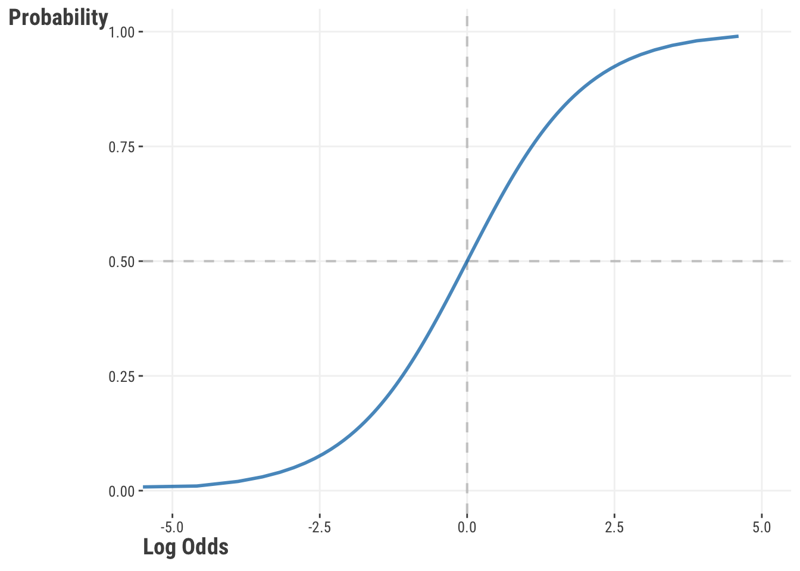
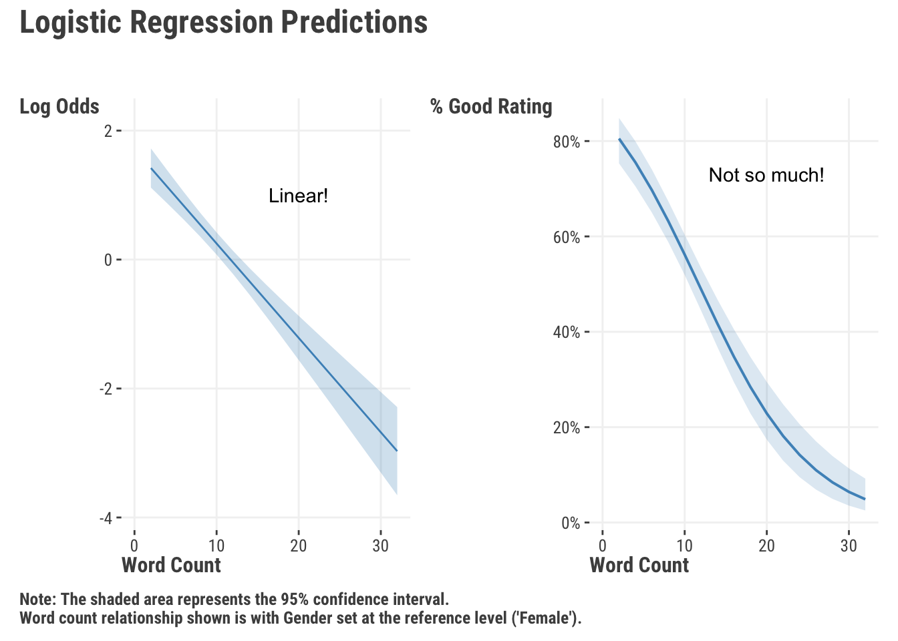
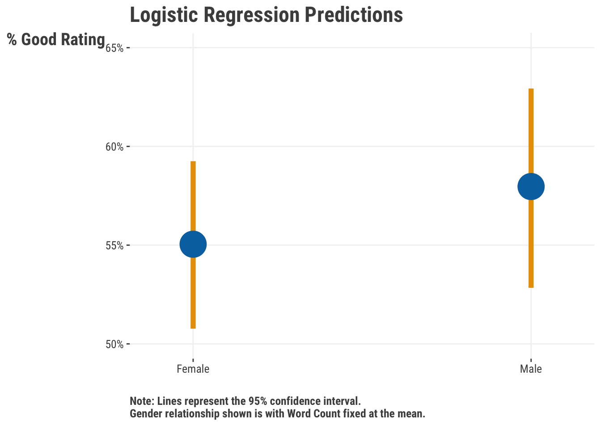
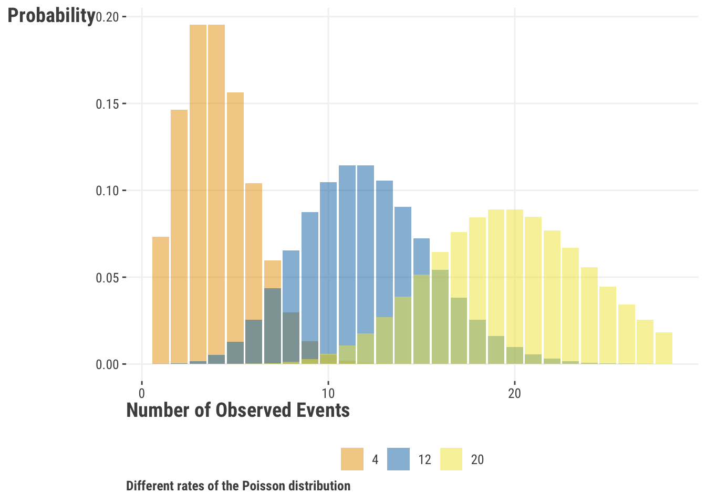

7 Generalized Linear Models
What happens when your target variable isn’t really something you feel comfortable modeling with a normal distribution? Maybe you’ve got a binary condition, like good or bad, or maybe you’ve got a skewed count of something, like the number of times a person has been arrested has been reincarcerated. In these cases, you can use a linear regression, but it often won’t get you exactly what you want in terms of predictive performance. Instead, you can generalize your approach to handle these scenarios.
Generalized linear models allow us to implement different probability distributions beyond the normal distribution that is assumed for linear regression. This allows us to use the same linear model framework that we’ve been using, but with different types of target data. As such, these models generalize the linear model to better capture the nuances of different types of feature-target relationships.
7.1 Key Ideas
- A simple tweak to our previous approach allows us to generalize our linear model to account for other types of target data.
- Common distributions such as binomial, Poisson, and others can often improve model fit and interpretability.
- Getting familiar with just a couple distributions will allow you to really expand your modeling repertoire.
7.1.1 Why this matters
The linear model is powerful on its own, but even more so when you realize you can extend it to many other data settings, some of which may have implicitly nonlinear feature-target relationships! When we want to classify observations, count them, or deal with proportions and other things, very simple tweaks of our standard linear model allow us to handle such situations.
7.1.2 Helpful context
Generalized linear models are a broad class of models that extend the linear model to different distributions of the target variable. In general, you’d need to have a pretty good grasp of linear regression before getting too carried away here.
7.2 Distributions & Link Functions
Remember how linear regression models really enjoy the whole Gaussian, i.e. ‘normal’, distribution scene? We saw that the essential form of the linear model can be expressed as follows. With probabilistic models such as these, the formula is generally expressed as \(y | X, \theta \sim ...\), where X is the matrix of features (data) and \(\theta\) the parameters estimated by the model. We simplify this as \(y^*\) here.
\[ y| X, \beta, \sigma \sim \textrm{Normal}(\mu, \sigma^2) \]
\[ y^* \sim \textrm{Normal}(\mu, \sigma^2) \] \[ \mu = \alpha + X\beta \]
We create the linear combination of our features, and then we add a normal distribution that uses that combination as the mean, which will naturally vary for each sample of data. Sometimes though, this may not be the best approach. In these cases we rely on some other distribution that potentially fits the data better. But often these other distributions don’t have a direct link to our features, and that’s where a link function comes in.
Think of the link function as a bridge between our features and the distribution we want to use. It lets us use a linear combination of features to predict the mean or other parameters of the distribution. As an example, we can use a log to link the mean to the linear predictor, or conversely, exponentiate the linear predictor to get the mean. In this example, the log is the link function and we use its inverse to map the linear predictor back to the mean.
If you know a distribution’s ‘canonical’ link function, which is like the default for a given distribution, that is all the deeper you will probably ever need to go. At the end of the day, these link functions will link your model output to the parameters required for the distribution. The take-away here is that the link function describes how the mean or other parameters of interest are generated from the (linear) combination of features.
One thing to note, when we switch distributions for GLMs, we’re still concerning ourselves with the conditional distribution of the target variable given the features. The distribution of the target variable itself is not changing per se, even though its distribution, e.g. as a binary variable, is suggesting to us to try something that would allow us to produce a binary outcome from the model. But just like we don’t assume the target itself is normal in a linear regression, here we are assuming that the conditional distribution of the target given the features is the distribution we are specifying.
7.3 Logistic Regression
As we’ve seen, you will often have a binary variable that you might want to use as a target – it could be dead/alive, lose/win, quit/retain, etc. You might be tempted to use a linear regression, but you will quickly find that it’s not the best option in that setting. So let’s try something else.
7.3.1 The binomial distribution
Logistic regression is differs from linear regression mostly because it is used with a binary target instead of a continuous one as with linear regression. We typically assume that the target follows a binomial distribution. Unlike the normal distribution,, which is characterized by its mean (\(\mu\)) and variance (\(\sigma^2\)), the binomial distribution is defined by the parameters: p (also commonly \(\pi\)) and a known value n. Here, p represents the probability of a specific event occurring (like flipping heads, winning a game, or defaulting on a loan), and n is the number of trials or attempts under consideration.
It’s important to note that the binomial distribution, which is commonly employed in GLMs for logistic regression, doesn’t just describe the probability of a single event. It actually represents the distribution of the number of successful outcomes in n trials, which can be greater than 1. In other words, it’s a count distribution that tells us how many times we can expect the event to occur in a given number of trials.
Let’s see how the binomial distribution looks with 100 trials and probabilities of ‘success’ at p = .25, .5, and .75:
If we examine the distribution for a probability of .5, we will see that it is roughly centered over a total success count of 50. This tells us that we have the highest probability of encountering 50 successes if we ran 100 trials. Shifting our attention to a .75 probability of success, we see that our distribution is centered over 75. In practice we probably end up with something around that value, but on average and over repeated runs of 100 trials, the value would be \(p\cdot n\). Try it yourself.
Note that R switches ‘size’ and ‘n’ names relative to numpy. n regards the number of values you want.
set.seed(123)
# produces a count whose mean is n*p
rbinom(n = 6, size = 100, prob = .75)
# produces a binary 0, 1 as seen in logistic regression target (with mean p)
rbinom(n = 6, size = 1, prob = .75)[1] 77 72 76 70 68 82
[1] 1 0 1 1 0 1Note that numpy switches ‘size’ and ‘n’ names relative to R. Here n is the the same as depicted in the formulas later.
import numpy as np
np.random.seed(123)
# produces a count whose mean is n*p
np.random.binomial(n = 100, p = .75, size = 6)
# produces a binary 0, 1 as seen in logistic regression target (with mean p)
np.random.binomial(n = 1, p = .75, size = 6) array([73, 78, 78, 75, 73, 76])
array([0, 1, 1, 1, 1, 1])Since we are dealing with a number of trials, it is worth noting that the binomial distribution is a discrete distribution. If we have any interest in knowing the probability for a number of successes we can use the following formula, where \(n\) is the number of trials, \(x\) is the number of successes, and \(p\) is the probability of success:
\[ P(x) = \frac{n!}{(n-x)!x!}p^x(1-p)^{n-x} \tag{7.1}\]
Now let’s see how the binomial distribution relates to the linear model space:
\[y^* \sim \textrm{Binomial}(n, p) \]
\[ \textrm{logit}(p) = \alpha + X\beta \tag{7.2}\]
In this case, we are using the logit function to map the linear combination of our features to the probability of success. The logit function is defined as:
\[\textrm{log}\frac{p}{1-p}\]
We are literally just taking the log of the odds.
Now we can map this back to our model:
\[\textrm{log}\frac{p}{1-p} = \alpha + X\beta\]
And finally, we can take that logistic function and invert it (the inverse-logit function) to produce the probabilities.
\[p = \frac{\textrm{exp}(\alpha + X\beta)}{1 + \textrm{exp}(\alpha + X\beta)}\]
or equivalently:
\[p = \frac{1}{1 + \textrm{exp}(-(\alpha + X\beta))}\]
Whenever we get results for a logistic regression model, the default coefficients and predictions are almost always on the log odds scale. We usually exponentiate the coefficients them to get the odds ratio. For example, if we have a coefficient of .5, we would say that for every one unit increase in the feature, the odds of the target being a ‘success’ increase by a factor of exp(.5) = 1.6. And we can convert the predicted log odds to probabilities using the inverse-logit function.
7.3.2 Probability, odds, and log odds
Probability lies at the heart of all of this, so let’s look more closely at the relationship between the probability and log odds. In our model, the log odds are produced by the linear combination of our features. Let’s say we have a model that gives us those values for each observation. We can then convert them from the linear space to the (nonlinear) probability space with our inverse-logit function, which might look something like this.

We can see that the probability of success approaches 0 when the log odds are negative and approaches 1 when the log odds are positive. The shape is something like an S, which also tells us that we are not in linear space when we switch to probabilities.
Log odds have a nice symmetry around 0, where the probability of success is 0.5. Any value above 0 indicates a probability of success greater than 0.5, and any value below 0 indicates a probability of success less than 0.5. However, don’t get too hung up on a .5 probability as being fundamentally important for any given problem.
As mentioned, logistic regression models usually report coefficients on the log-odds scale by default. The coefficients reflect the odds associated with predicted probabilities given the feature at different values one unit apart. Log-odds are not the most intuitive thing to interpret. When we are more concerned with model interpretability, we often convert the coefficients to odds ratios by exponentiating them. In logistic regression models, the odds ratio is the ratio of the odds of the outcome occurring (vs. not occurring) for a one unit increase in the feature.
The following function will calculate the odds ratio for two probabilities, which we can think of as prediction outcomes for two values of a feature one unit apart.
calculate_odds_ratio = function(p_1, p_2) {
odds_1 = p_1 / (1 - p_1)
odds_2 = p_2 / (1 - p_2)
odds_ratio = odds_2 / odds_1
tibble(
value = c('1', '2'),
p = c(p_1, p_2),
odds = c(odds_1, odds_2),
log_odds = log(odds),
odds_ratio = c(NA, odds_ratio)
)
}
result_A = calculate_odds_ratio(.5, .6)
result_B = calculate_odds_ratio(.1, .2)
result_C = calculate_odds_ratio(.9, .8) # inverse of the .1, .2 example
result_Aimport pandas as pd
import numpy as np
def calculate_odds_ratio(p_1, p_2):
odds_1 = p_1 / (1 - p_1)
odds_2 = p_2 / (1 - p_2)
odds_ratio = odds_2 / odds_1
return pd.DataFrame({
'value': ['1', '2'],
'p': [p_1, p_2],
'odds': [odds_1, odds_2],
'log_odds': [np.log(odds_1), np.log(odds_2)],
'odds_ratio': [np.nan, odds_ratio]
})
result_A = calculate_odds_ratio(.5, .6)
result_B = calculate_odds_ratio(.1, .2)
result_C = calculate_odds_ratio(.9, .8) # inverse of the .1, .2 example
result_A| value | p | odds1 | log_odds | odds_ratio2 | |
|---|---|---|---|---|---|
| A | 1 | 0.50 | 1.00 | 0.00 | NA |
| 2 | 0.60 | 1.50 | 0.41 | 1.50 | |
| B | 1 | 0.10 | 0.11 | −2.20 | NA |
| 2 | 0.20 | 0.25 | −1.39 | 2.25 | |
| C | 1 | 0.90 | 9.00 | 2.20 | NA |
| 2 | 0.80 | 4.00 | 1.39 | 0.44 | |
| 1 The odds are p / (1 - p) | |||||
| 2 The odds ratio refers to value 2 versus value 1 | |||||
In the table we see that even though each probability difference is the same, the odds ratio is different. Comparing A to B, the difference between a probability of .5 to .6 is not as much of a change on the odds (linear) scale as the difference between .1 to .2. The first setting is a 50% increase in the odds, whereas the second more than doubles the odds. However, the difference between .9 to .8 is the same as the difference between .1 to .2, as they reflect points that are the same distance from the boundary. The odds ratio for setting C is just the inverse of setting B. The following shows our previous plot with the corresponding settings shaded.
Odds ratios might be more interpretable to some, but since they are ratios of ratios, people have historically had a hard time with those as well. As shown in Table 7.1, knowledge of the baseline rate is required for a good understanding of them. Furthermore, doubling the odds is not the same as doubling the probability, so we’re left doing some mental calisthenics to interpret them. Odds ratios are often used in academic settings, but in practice elsewhere, they are not as common. The take-home message is that we can interpret our result in terms of odds (ratios of probabilities), log-odds (linear space), or as probabilities (nonlinear space), but it can take a little more effort than our linear regression setting1. Our own preference is to stick with predicted probabilities, but it’s good to have familiarity of odds ratios, since they are often reported in academic papers and media reports.
7.3.3 A logistic regression model
Now let’s get our hands dirty and do a classification model using logistic regression. For our model let’s return to the movie review data, but now we’ll use the binary rating_good (‘good’ vs. ‘bad’) as our target. Before we get to modeling, see if you can find out the frequency of ‘good’ and ‘bad’ reviews, and the probability of getting a ‘good’ review. We examine the relationship of word_count and gender features with the likelihood of getting a good rating.
df_reviews = read_csv('https://tinyurl.com/moviereviewsdata')
# for the 'by-hand' option later
X = df_reviews |>
select(word_count, male = gender) |>
mutate(male = ifelse(male == 'male', 1, 0)) |>
as.matrix()
y = df_reviews$rating_good
model_logistic = glm(
rating_good ~ word_count + gender,
data = df_reviews,
family = binomial
)
summary(model_logistic)
Call:
glm(formula = rating_good ~ word_count + gender, family = binomial,
data = df_reviews)
Coefficients:
Estimate Std. Error z value Pr(>|z|)
(Intercept) 1.7124 0.1814 9.44 <2e-16 ***
word_count -0.1464 0.0155 -9.44 <2e-16 ***
gendermale 0.1189 0.1375 0.86 0.39
---
Signif. codes: 0 '***' 0.001 '**' 0.01 '*' 0.05 '.' 0.1 ' ' 1
(Dispersion parameter for binomial family taken to be 1)
Null deviance: 1370.4 on 999 degrees of freedom
Residual deviance: 1257.4 on 997 degrees of freedom
AIC: 1263
Number of Fisher Scoring iterations: 4import pandas as pd
import statsmodels.formula.api as smf
import statsmodels.api as sm
df_reviews = pd.read_csv('https://tinyurl.com/moviereviewsdata')
# for the 'by-hand' option later
X = (
df_reviews[['word_count', 'gender']]
.rename(columns = {'gender': 'male'})
.assign(male = np.where(df_reviews[['gender']] == 'male', 1, 0))
)
y = df_reviews['rating_good']
model_logistic = smf.glm(
'rating_good ~ word_count + gender',
data = df_reviews,
family = sm.families.Binomial()
).fit()
model_logistic.summary()| Dep. Variable: | rating_good | No. Observations: | 1000 |
| Model: | GLM | Df Residuals: | 997 |
| Model Family: | Binomial | Df Model: | 2 |
| Link Function: | Logit | Scale: | 1.0000 |
| Method: | IRLS | Log-Likelihood: | -628.70 |
| Date: | Sun, 01 Sep 2024 | Deviance: | 1257.4 |
| Time: | 18:56:28 | Pearson chi2: | 1.02e+03 |
| No. Iterations: | 4 | Pseudo R-squ. (CS): | 0.1068 |
| Covariance Type: | nonrobust |
| coef | std err | z | P>|z| | [0.025 | 0.975] | |
| Intercept | 1.7124 | 0.181 | 9.442 | 0.000 | 1.357 | 2.068 |
| gender[T.male] | 0.1189 | 0.138 | 0.865 | 0.387 | -0.151 | 0.388 |
| word_count | -0.1464 | 0.016 | -9.436 | 0.000 | -0.177 | -0.116 |
Now that we have some results, we can see that they aren’t too dissimilar from the linear regression output we obtained before. But, let’s examine them more closely.
7.3.4 Interpretation and visualization
If our modeling goal is not just producing predictions, we need to know what those results mean. The coefficients that we get from our model are in log odds, but as we demonstrated we can exponentiate them to get the odds ratio. Interpreting log odds is difficult at best, but we can at least get a feeling for them directionally. A log odds of 0 (odds ratio of 1) would indicate no relationship between the feature and target. A positive log odds would indicate that an increase in the feature will increase the log odds of moving from ‘bad’ to ‘good’, whereas a negative log odds would indicate that a decrease in the feature will decrease the log odds of moving from ‘bad’ to ‘good’. On the log odds scale, the coefficients are symmetric as well, such that, e.g., a +1 coefficient denotes a similar increase in the log odds as a -1 coefficient denotes a decrease.
| Parameter | Coefficient | Exp. Coef (OR) |
|---|---|---|
| (Intercept) | 1.71 | 5.54 |
| word_count | −0.15 | 0.86 |
| gendermale | 0.12 | 1.13 |
Fortunately, the intercept is easy – it is the odds of a ‘good’ review when word count is 0 and gender is ‘female’. We see that we’ve got an odds ratio of 0.86 for the word count variable and 1.13 for the male variable. This means that for every one unit increase in word count, the odds of a ‘good’ review decreases by about 14%. Males are associated with an odds of a ‘good’ review that is 13% higher than females.
We feel it is much more intuitive to interpret things on the probability scale, so we’ll get predicted probabilities for different values of the features. The way we do this is through the (inverse) link function, which will convert our log odds of the linear predictor to probabilities. We can then plot these probabilities to see how they change with the features. For the word count feature, we hold gender at the reference group (‘female’), and for the gender feature, we hold word count at its mean. In addition we convert the probability to the percentage chance of a ‘good’ review.

In Figure 7.4, we can see a clear negative relationship between the number of words in a review and the probability of being considered a ‘good’ movie. As we get over 20 words, the predicted probability of being a ‘good’ movie is less than .2. We also see the increase in the chance for a good rating with males vs. females, but our model results suggest this is not a statistically significant difference.

In the end, whether you think these differences are practically significant is up to you. And you’ll still need to do the standard model exploration to further understand the model (Chapter 4 has lots of detail on this). But this is a good start.
7.4 Poisson Regression
Poisson regression also belongs to the class of generalized linear models, and is used specifically when you have a count variable as your target. After logistic regression for binary outcomes, Poisson regression is probably the next most common type of generalized linear model you will encounter. Unlike continuous targets, a count starts at 0 and can only be a whole number. Often it is naturally skewed as well, so we’d like a model well-suited to this situation. Unlike the binomial, there is no concept of number of trials, just the count of events.
7.4.1 The Poisson distribution
The Poisson distribution is very similar to the binomial distribution, because the binomial is also a count distribution, and in fact generalizes the poisson2. The Poisson has a single parameter noted as \(\lambda\), which makes it the simplest model setting we’ve seen so far3. Conceptually, this rate parameter is going to estimate the expected number of events during a time interval. This can be accidents in a year, pieces produced in a day, or hits during the course of a baseball season.
Let’s see what the particular distribution might look like for different rates. We can see that for low count values, the distribution is skewed to the right, but note how the distribution becomes more symmetric and bell-shaped as the rate increases4. You might also be able to tell that the variance increases along with the mean, and in fact, the variance is equal to the mean for the Poisson distribution.

Let’s make a new variable that will count the number of times a person uses a personal pronoun word in their review. We’ll use it as our target variable and see how it relates to the number of words and gender in a review as we did before.
df_reviews$poss_pronoun = stringr::str_count(
df_reviews$review_text,
'\\bI\\b|\\bme\\b|\\b[Mm]y\\b|\\bmine\\b|\\bmyself\\b'
)
hist(df_reviews$poss_pronoun)df_reviews['poss_pronoun'] = (
df_reviews['review_text']
.str.count('\\bI\\b|\\bme\\b|\\b[Mm]y\\b|\\bmine\\b|\\bmyself\\b')
)
df_reviews['poss_pronoun'].hist()
7.4.2 A Poisson regression model
Recall that GLM specific distributions have a default link function. The Poisson distribution uses a log link function:
\[y^* \sim \textrm{Poisson}(\lambda)\]
\[\text{log}(\lambda) = \alpha + X\beta\]
Using the log link keeps the outcome non-negative when we use the inverse of it. For model fitting with standard functions, all we have to do is switch the family from ‘binomial’ to ‘poisson’. As the default link is the ‘log’, so we don’t have to specify it explicitly5.
In this model we’ll predict the number of personal pronouns used in a review. We’ll use word count and gender as our features like we did with the logistic model.
model_poisson = glm(
poss_pronoun ~ word_count + gender,
data = df_reviews,
family = poisson
)
summary(model_poisson)
exp(model_poisson$coefficients)model_poisson = smf.glm(
formula = 'poss_pronoun ~ word_count + gender',
data = df_reviews,
family = sm.families.Poisson()
).fit()
model_poisson.summary()
np.exp(model_poisson.params)7.4.3 Interpretation and visualization
Like with logistic, we can exponentiate the coefficients to get what’s now referred to as the rate ratio. This is the ratio of the rate of the outcome occurring for a one unit increase in the feature.
| Parameter | Coefficient | Exp. Coef |
|---|---|---|
| (Intercept) | −1.888 | 0.151 |
| word_count | 0.104 | 1.109 |
| gendermale | 0.080 | 1.083 |
For this model, an increase in one review word leads to an expected log count increase of ~0.1. We can exponentiate this to get 1.11, and this tells us that every added word in a review gets us a 11% increase in the number of possessive pronouns. This is probably not a surprising result - wordier stuff has more types of words!
But as usual, the visualization tells the better story. Notice that the predictions are not discrete, but continuous. This is because predictions here are the same as with our other models, and reflect the expected or average counts.

With everything coupled together, we have an interpretable coefficient for word_count, a clear plot, and adequate model fit. Therefore, we might conclude that there is a positive relationship between the number of words in a review and the number of times a person uses a personal possessive.
7.5 How Did We Get Here?
If we really want to demystify the modeling process, let’s create our own function to estimate the coefficients. We can use maximum likelihood estimation to estimate the parameters of our model, which is the approach used by standard package functions. Feel free to skip this part if you only wanted the basics, but for even more information on maximum likelihood estimation, see Section 6.7 where we take a deeper dive into the topic and with a similar function. The following code is a simple version of what goes on behind the scenes with ‘glm’ type functions.
glm_simple = function(par, X, y, family = 'binomial') {
# add an column for the intercept
X = cbind(1, X)
# Calculate the linear predictor
mu = X %*% par # %*% is matrix multiplication
# get the likelihood for the binomial or poisson distribution
if (family == 'binomial') {
# Convert to a probability ('logit' link/inverse)
p = 1 / (1 + exp(-mu))
L = dbinom(y, size = 1, prob = p, log = TRUE)
}
else if (family == 'poisson') {
# Convert to a count ('log' link/inverse)
p = exp(mu)
L = dpois(y, lambda = p, log = TRUE)
}
# return the negative sum of the log-likelihood (for minimization)
value = -sum(L)
return(value)
}from scipy.stats import poisson, binom
def glm_simple(par, X, y, family = 'binomial'):
# add an column for the intercept
X = np.column_stack((np.ones(X.shape[0]), X))
# Calculate the linear predictor
mu = X @ par # @ is matrix multiplication
# get the likelihood for the binomial or poisson distribution
if family == 'binomial':
p = 1 / (1 + np.exp(-mu))
L = binom.logpmf(y, 1, p)
elif family == 'poisson':
lambda_ = np.exp(mu)
L = poisson.logpmf(y, lambda_)
# return the negative sum of the log-likelihood (for minimization)
value = -np.sum(L)
return valueNow that we have our objective function, we can fit our models, starting with the logistic model. We will use the optim function in R and the minimize function in Python.
init = rep(0, ncol(X) + 1)
names(init) = c('intercept', 'b1', 'b2')
fit_logistic = optim(
par = init,
fn = glm_simple,
X = X,
y = y,
control = list(reltol = 1e-8)
)
fit_logistic$parimport numpy as np
from scipy.optimize import minimize
init = np.zeros(X.shape[1] + 1)
fit_logistic = minimize(
fun = glm_simple,
x0 = init,
args = (X, y),
method = 'BFGS'
)
fit_logistic['x']And here is our comparison table of the raw coefficients. Looks like our little function worked well!
| Parameter | Ours | Standard |
|---|---|---|
| Intercept | 1.7122 | 1.7124 |
| Word Count | −0.1464 | −0.1464 |
| Male | 0.1189 | 0.1189 |
Similarly, we can also use our function to estimate the coefficients for the poisson model. Just like the GLM function we might normally use, we can change the family option to specify the distribution we want to use.
fit_poisson = optim(
par = c(0, 0, 0),
fn = glm_simple,
X = X,
y = df_reviews$poss_pronoun,
family = 'poisson'
)
fit_poisson$parfit_poisson = minimize(
fun = glm_simple,
x0 = init,
args = (
X,
df_reviews['poss_pronoun'],
'poisson'
)
)
fit_poisson['x']And once again we’re able to get the same results (raw coefficients shown).
| Parameter | Ours | Standard |
|---|---|---|
| Intercept | −1.8876 | −1.8877 |
| Word Count | 0.1036 | 0.1036 |
| Male | 0.0800 | 0.0798 |
This goes to show that just a little knowledge of the underlying mechanics can go a long way in understanding how many models work.
7.6 Wrapping Up
So at this point you have standard linear regression with the normal distribution for continuous targets, logistic regression for binary/proportional ones via the binomial distribution, and Poisson regression for counts. These models combine to provide much of what you need for starting out in the modeling world, and all serve well as baseline models for comparison when using more complex methods (Section 10.4). However, what we’ve seen is just a tiny slice of the potential universe of distributions that you could use. Here is a brief list of some that are still in the GLM family proper and others that can be useful6:
Other Core GLM (available in standard functions):
- Gamma: For continuous, positive targets that are skewed.
- Inverse Gaussian: For continuous, positive targets that are skewed and have a long tail.
Others (some fairly common):
- Beta: For continuous targets that are bounded between 0 and 1.
- Log-Normal: For continuous targets that are skewed. Essentially what you get with linear regression and logging the target7.
- Tweedie: Generalizes several core GLM family distributions.
In the ballpark:
- Negative Binomial: For count targets that are overdispersed.
- Multinomial: Typically used for categorical targets with more than two categories, but like the binomial, it is actually a more general (multivariate) count distribution.
- Student t: For continuous targets that are distributed similar to normal but with heavier tails.
- Categorical/Ordinal: For categorical targets with more than two categories, or ordered categories. In the former case, it’s a different distribution than the multinomial but applied to the same setting.
- Quasi *: For example quasipoisson. These ‘quasi-likelihoods’ served a need at one point that is best served by other methods.
You’ll typically need separate packages to fit some of these, but most often the tools keep to a similar functional approach. The main thing is to know that certain distributions might fit your data a bit better than others, and that you can use both the same basic framework and mindset to fit them, and maybe get a little closer to the answer you seek about your data!
7.6.1 The common thread
GLMs extend your standard linear model as a powerful tool for modeling a wide range of data types. They are a great way to get started with more complex models, and even allow us to linear models in a not so linear way. It’s best to think of GLMs more broadly than the strict statistical definition, and consider many models like ordinal regression, ranking models, survival analysis, and more as part of the same extension.
7.6.2 Choose your own adventure
At this point you have a pretty good sense of what linear models have to offer, but there’s even more! You can start to look at more complex models that build on these ideas, like mixed models, generalized additive models and more in Chapter 8. You can also feel confident heading into the world of machine learning (Chapter 9), where you’ll find additional ways to think about your modeling approach.
7.6.3 Additional resources
If you are itching for a textbook, there isn’t any shortage of them out there and you can essentially take your pick, though most purely statistical treatments are going to be a bit dated at this point, but still accurate and maybe worth your time.
- Generalized Linear Models (McCullagh (2019)) is a classic text on the subject, but it is a bit dense and not for the faint of heart, or even Nelder and Wedderburn (1972), which is a very early treatment.
For more accessible fare that doesn’t lack on core details either:
- An Introduction to Generalized Linear Models is generally well regarded (Dobson and Barnett (2018)).
- Generalized Linear Models is more accessible (Hardin and Hilbe (2018)).
- Roback and Legler’s Beyond Multiple Linear Regression, available for free.
- Applied Regression Analysis and Generalized Linear Models (Fox (2015))
- Generalized Linear Models with Examples in R (Dunn and Smyth (2018))
7.7 Exercise
You have two options here, both using the fish data (Section C.4).
Conduct a Poisson regression to predict the number of fish caught based on the other features like how many people were on the trip, how many children, whether live bait was used (or any others). Interpret your model results in terms of the coefficients/rate ratios. Inspect your model more generally to see how well it fits the data, do you spot any issues?
Using the same data, binarize the count target variable for whether any fish were caught, and proceed similarly as you would have with the Poisson regression.
# Load the data
df_fish = read_csv('https://tinyurl.com/fishcountdata')
df_fish$any_catch = ifelse(df_fish$count > 0, 1, 0)
model = glm(count ~ ???)
model = glm(any_catch ~ ???)
summary(model)
exp(coef(model)) # IRR/ORimport pandas as pd
import statsmodels.api as sm
import statsmodels.formula.api as smf
# Load the data
df_fish = pd.read_csv('https://tinyurl.com/fishcountdata')
df_fish['any_catch'] = (df_fish['count'] > 0).astype(int)
model = smf.glm(
formula = 'count ~ ???',
data = df_fish,
family = ???,
).fit()
model.summary()
np.exp(model.params) # IRR/ORFor more on interpreting odds ratios, see this article.↩︎
If your binomial setting has a very large number of trials relative to the number of successes, which amounts to very small proportions \(p\), you would find that the binomial distribution would converge to the Poisson distribution.↩︎
Neither the binomial nor the Poisson have a variance parameter to estimate, as the variance is determined by the mean. This is in contrast to the normal distribution, where the variance is an estimated parameter. For the Poisson, the variance is equal to the mean, and for the binomial, the variance is equal to \(n*p*(1-p)\). The Poisson assumption of equal variance rarely holds up in practice, so people often use the negative binomial distribution instead.↩︎
From a modeling perspective, for large mean counts you can just go back to using the normal distribution if you prefer without much losing much predictively and a gaining in interpretability.↩︎
It is not uncommon in many disciplines to use different link functions for logistic models, but the log link is always used for Poisson models.↩︎
There is not strict agreement about what qualifies for being in the GLM family.↩︎